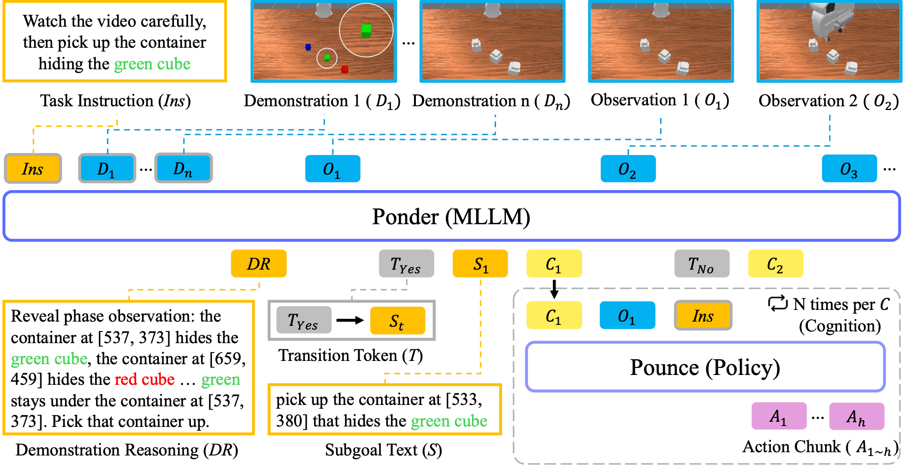
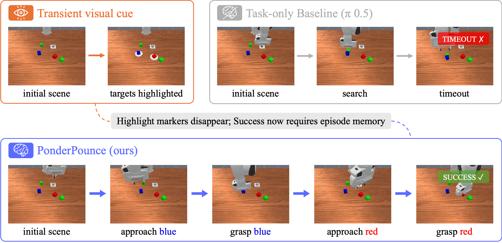
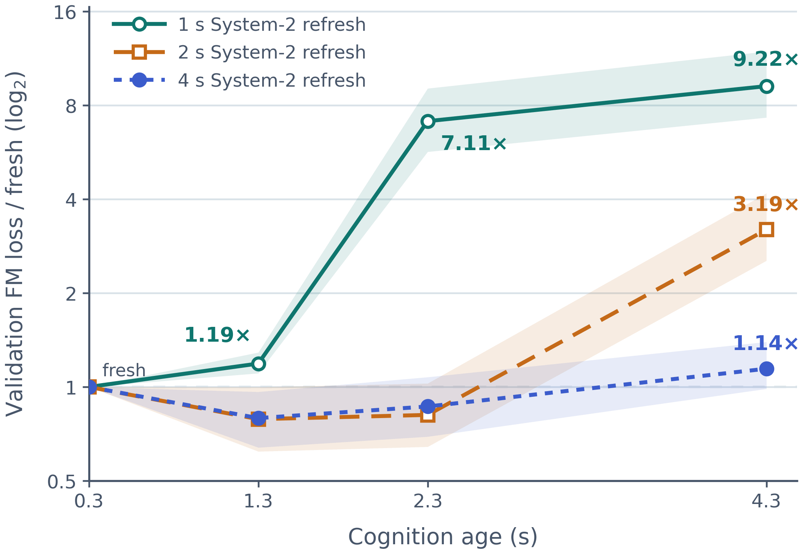

The core idea
Multimodal large language models can integrate long visual histories, reason under partial observability, and learn from examples. Vision-language-action models, however, typically inherit pretrained representations without using that contextual capacity as episode memory. Memory-dependent policies instead add task-specific samplers, stores, retrievers, or compressors.
PonderPounce takes a different route. Ponder, a System 2 MLLM, accumulates observations, demonstrations, and prior cognition in its native causal context. Pounce, a System 1 action model, receives the current observation and the newest continuous cognition token together with its age. The two pretrained systems run on decoupled clocks and are trained jointly end to end, without a purpose-built memory module or separate bridge pretraining.
Retains the episode in a pretrained MLLM context and produces fresh continuous cognition at sparse queries.
Routes only the latest cognition token and its age, keeping long-context processing off the action path.
Conditions a fast VLA controller on current sensory input and cognition while playing actions back at 20 Hz.
Architecture

Ponder accumulates the instruction, demonstrations, and observations. Transition tokens gate optional internal demonstration reasoning and subgoal text, while carrier states form continuous cognition. Pounce combines the newest cognition with the current observation to predict an action chunk.
Results
Average success on memory-dependent control and demonstration-conditioned manipulation.
RoboMME average success rate across base-scale, 9×-data, and oracle or human reference settings.
| Method | Episode memory | 1× data | 9× data |
|---|---|---|---|
| π0.5 | None | 17.93% | — |
| π0.5 + past actions | Action history | 19.73% | — |
| SAM2Act+ | SAM2 bank + attention | 21.37% | — |
| MemER | Keyframe selector / tracker | 42.38% | — |
| FrameSamp+Modul | Frame tokens + modulator | 44.51% | 57.88% |
| PonderPounce | Native MLLM context | 60.83% | 75.54% |
| SimpleSG+Oracle | Oracle subgoal | 49.58% | |
| GroundSG+Oracle | Grounded oracle subgoal | 84.08% | |
| Human | Human memory · reference | 90.50% | |
Memory in action

In RoboMME PickHighlight, target markers appear briefly and then disappear. A current-observation policy searches and times out; PonderPounce retains the earlier cue in episode context and grasps both highlighted targets.
Cognition analysis
Reusing cognition only at predicted transitions drops RoboMME success from 60.83% to 1.83% for the reported checkpoint, showing that control depends on within-subgoal refreshes.
Offline staleness tests show the same tradeoff: frequent-refresh checkpoints fit fresh cognition best, while models trained with slower refresh intervals are more robust when the cognition grows old.

Normalized validation loss under stale cognition. Lower is better; bands show 95% task-stratified bootstrap confidence intervals.
Citation
@article{choi2026ponderpounce,
title={PonderPounce: A Pretrained MLLM as an Episode Context Engine for Robot Control},
author={Choi, Suhwan and Jung, Jaeyoon and Kim, Sungkyung and Lee, Yunsung and Yu, Youngjae},
journal={arXiv preprint arXiv:2608.24115},
year={2026}
}